LO3: Iterative Design
Morphien's logo
Introduction
As part of the design process, I created an initial version of the logo, aiming to align it with the brand’s identity. After presenting it to my teammates, I received constructive feedback suggesting that the design could be made more visually engaging and that I should experiment with color variations to enhance its appeal.
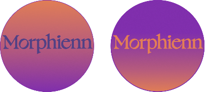
Taking thrir feedback into account, I revised the logo by incorporating more dynamic elements and exploring different color combinations to create a stronger visual impact. The updated version reflects these changes, making the design more interesting, vibrant, and aligned with the brand’s overall aesthetic.
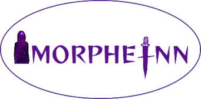
Upon presenting this new version, I received another feedback from my team that the circle element in the design might not be suitable for all social media platforms, as it could affect scalability and adaptability across different formats and I should think to change it with something engaging.
I ultimately decided to remove the circle around the logo and presented the updated version to my team. They agreed that this approach works better, especially for social media and aligns well with the overall brand. To ensure the logo is effective and well-received, I’ve decided to send it out for user feedback and get an additional opinion.
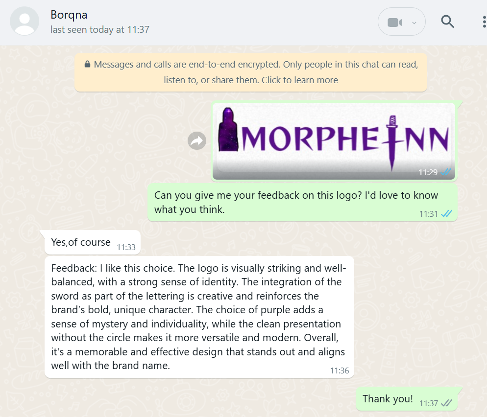
After receiving feedback from users, I felt completely confident that my logo was on the right track. The positive responses reassured me that the design choices I made—such as the color scheme, typography, and overall concept—were resonating well with the audience. It confirmed that the logo effectively communicates the brand’s identity
How Did It Go?
The feedback and iterative process played a crucial role in helping me refine the logo. Through multiple rounds of revisions and thoughtful input, I was able to explore different design directions, identify what worked and what didn’t, and ultimately create a final version that is not only more visually engaging but also adaptable across a variety of applications and platforms. This collaborative approach significantly improved both the aesthetic quality and functional versatility of the logo.
What I Learned
- I learned the importance of iteration and feedback in design.
- How different elements affect branding.
- Gained insight into logo adaptability, recognizing that a design must be versatile to fit various digital applications
Reflection
Above is how valuable in the design process, working together, and refining the design was from that experience. I realized that, without being tested out in the real world, logos are often out of touch with their intended purpose, and that feedback from real users is key to ensuring a logo achieves its purpose.
Prototype Design
Introduction
I began designing my portfolio and, based on feedback, made several changes to improve its visual appeal and user-friendliness.
What did I do
I started prototyping my portfolio design. In the beginning, I chose a green color palette and added purple accents to create contrast. Over time, I felt that something still wasn’t quite right. I had many doubts, especially about the navigation bar, so I asked for feedback. My teachers gave me several different suggestions to consider. Based on their opinion I changed the navigation bar 3 times.
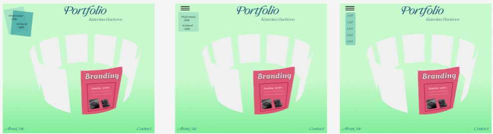
After that, I decided to follow the design of the inspiration website I had chosen more closely based on the advice that one of my teachers provided me. That helped me come up with a clearer idea for my own design.
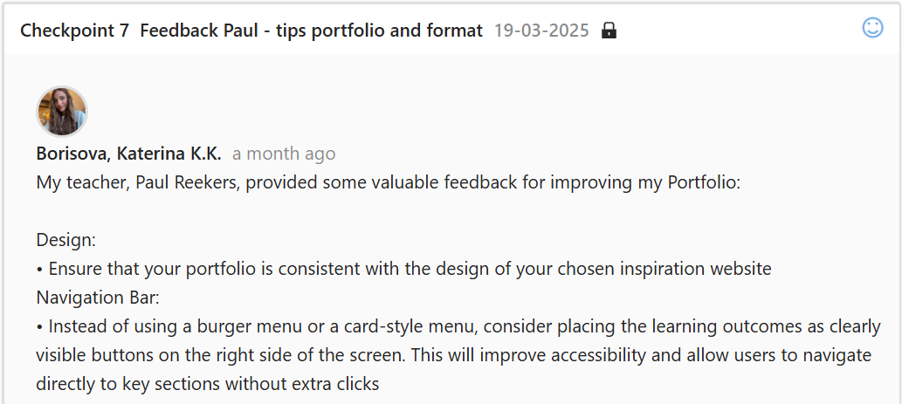
I went for feedback on my prototype and my teacher told me that I used too many colors and he thinks that the green color it’s not good for my design and I should change it. The other teacher told me that the contact form is outdated for nowadays websites.

Based on a wide range of feedback, I decided to completely redesign my prototype. I initially aimed to create something unique, but I realized that the previous design didn’t truly reflect my personality or the message I wanted to convey. Feeling that it lacked a personal connection, I started from scratch and developed a new design that better represents who I am. I incorporated my favorite colors and elements that express my individuality, ensuring that the final result feels authentic, meaningful, and distinctly mine.
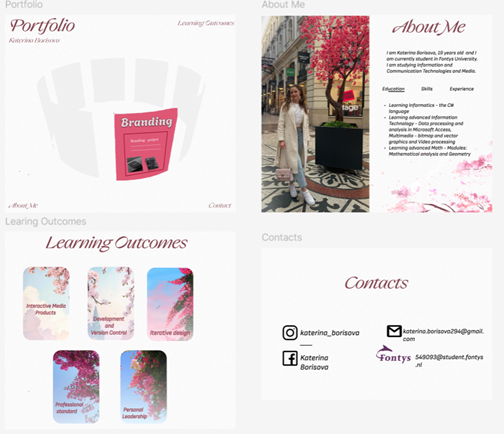
Figma Prototype: https://www.figma.com/design/GINbbdaFvss47yOYskF1YJ/Untitled?node-id=0-1&p=f&t=03HSrwoJBq0qmNtc-0
After creating my finalprototype, I shared it with one of my classmates to gather feedback on the design, layout, and overall usability. I wanted to make sure the interface was clear, visually appealing, and user-friendly.
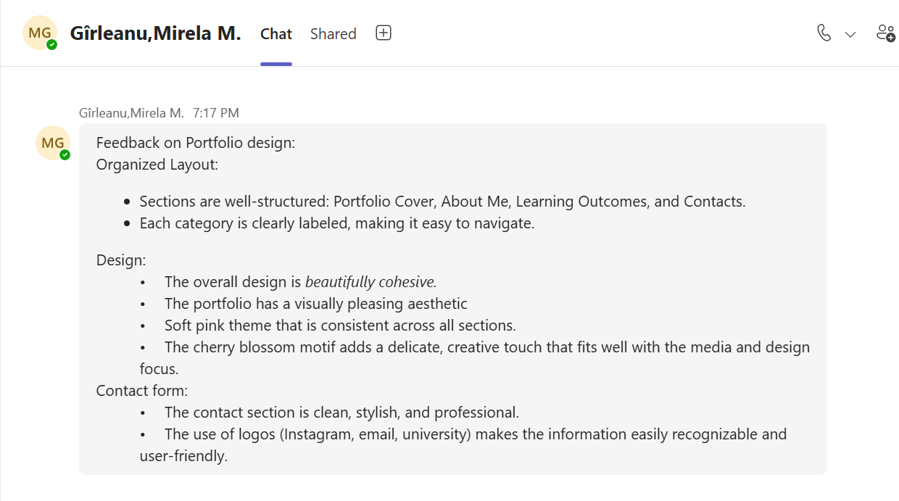
How Did It Go?
In the beginning, I felt really confused, especially about how to design the navigation bar. I didn’t have a clear direction, and it was a stressful process. However, after redesigning my prototype, I now have a clear vision of what I want and how to present it. Thanks to the feedback, my new design has a more cohesive color scheme and an improved structure, which makes it easier to transition into the coding phase.
What I Learned
I learned how valuable feedback can be during the design process. Listening to different perspectives helped me see my design from new angles and led me to make meaningful improvements. I also realized that visual harmony and modern functionality are key when building a portfolio that stands out.
Reflection
This experience taught me that design is an evolving process, and it's okay to feel uncertain at times. What matters most is being open to change and willing to try different approaches. I'm proud of the progress I've made, and I feel more confident moving forward. The challenges I faced helped me grow, and I now understand the importance of user experience, consistency, and professional aesthetics in web design.
Belco's logos
Introduction
My task was to redesign the logo for the Belco Alliance website to ensure it aligned with the new homepage design. I created five different logo iterations, making adjustments based on continuous feedback from my groupmate. After several rounds of refinement, we agreed that the final version was the most suitable choice for the redesigned site.
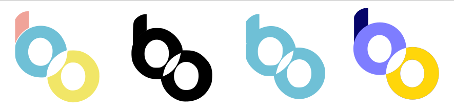
What Did I Do?
Initially, we considered using the original Belco Alliance logo. However, I felt it didn’t match the new design of the homepage—it lacked cohesion with the updated aesthetic. I discussed this with my groupmate and showed her how the original logo looked within the new design. She agreed that it didn’t fit and suggested exploring darker tones.
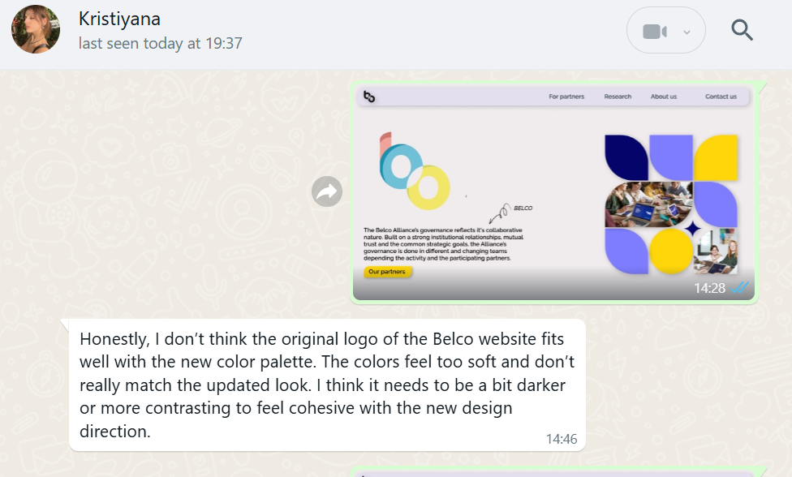
Then I changed the logo color to black to add contrast and a more modern feel. After sharing this version with my groupmate, she felt that black was too harsh and didn’t complement the design’s tone.
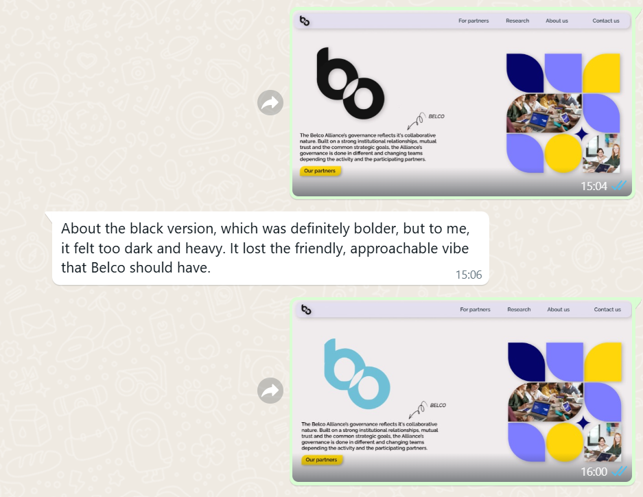
Taking her feedback into account, I tried a blue version of the logo. While this was better, she thought it looked too simple and lacked visual interest or uniqueness.
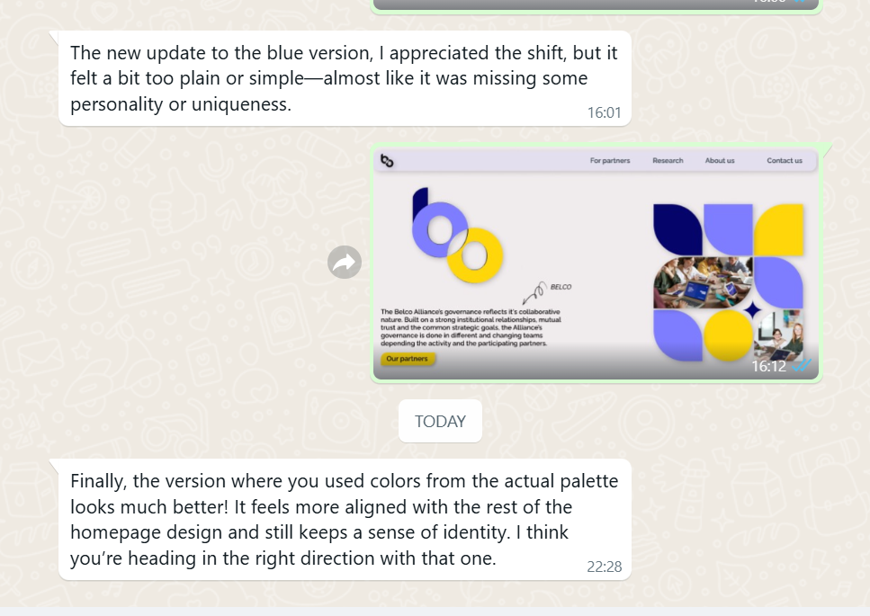
At this point, I re-evaluated my approach. I wanted to retain the clarity of the original but enhance it with a more eye-catching and dynamic appearance. I decided to use a combination of three colors to make the logo more vibrant, modern, and engaging—while still remaining professional and appropriate for the website’s theme.
After presenting this final version, my groupmate approved it. We both felt confident that it was the strongest and most appropriate logo design for the updated Belco Alliance website.
How Did It Go?
The design process involved multiple iterations, feedback sessions, and refinements. While it was sometimes challenging to balance creativity with constructive criticism, the step-by-step revisions led to a final design that we were both proud of. Seeing the progress from the initial version to the finished logo gave me a great sense of accomplishment.
What I Learned
- The importance of gathering and applying feedback in the design process
- How to collaborate effectively with team members
- The value of being open to change and not getting attached to a single idea
- How different color choices can affect a design’s tone and user perception
Reflection
This experience taught me that design is not just about personal taste—it’s about creating something functional, appealing, and suited to its purpose. I learned how crucial feedback is in achieving that goal. Every suggestion from my groupmate pushed the design in a better direction, and I became more confident in refining and defending my ideas through collaboration. I also gained practical skills in color theory, visual balance, and modern logo aesthetics. Most importantly, I realized that great design is a process of exploration, feedback, and continuous improvement.
Learning Outcomes page - choices
Introduction
While reviewing my Learning Outcomes page, I felt that something was missing—it looked too plain and lacked the engaging quality I wanted. I decided to redesign it by adding interactive elements that would enhance the visual experience and make the page more dynamic.
What Did I Do?
Before making any design changes, I sought feedback from a friend to understand whether the page truly felt empty or if adding new elements might clutter the layout. She agreed that the current design felt too basic and could benefit from some visual enhancement to make it more appealing.
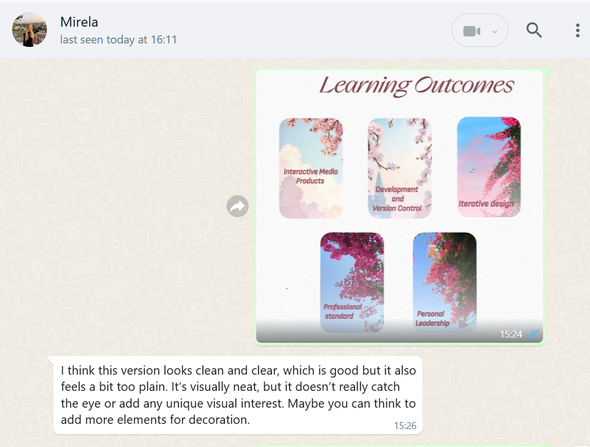
I started by adding two floral motifs, hoping to bring a soft, decorative touch to the page. However, after showing her this version, she pointed out that something felt off. The flowers didn’t quite match the overall style, and the placement made the page look unbalanced. She suggested that I try something more sophisticated and smooth, in line with the rest of the design.
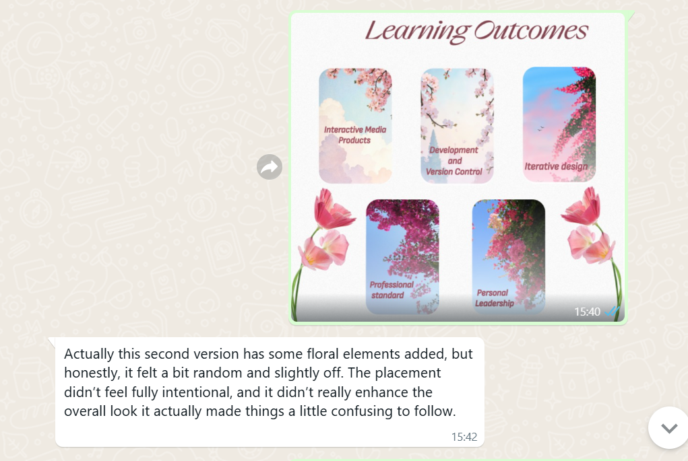
Taking her feedback seriously, I brainstormed ways to make the page more engaging without sacrificing its clean, minimalistic aesthetic. I eventually came up with the idea of adding small animated flowers that would gently fall down the screen and disappear at the bottom. This approach would introduce subtle interactivity while keeping the layout simple and elegant.
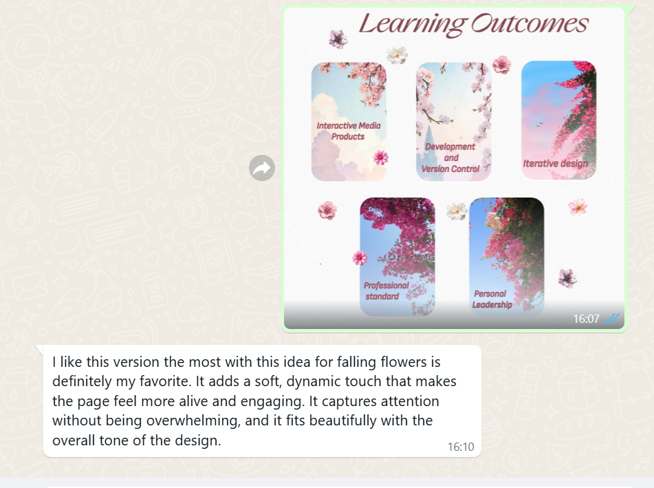
I implemented the animation and shared the updated version with my friend. She loved the new concept and gave me very positive feedback, affirming that the interactive animation added just the right amount of charm without overwhelming the design.
How Did It Go?
The process involved a few rounds of experimentation and constructive feedback. Initially, I was unsure about how to make the page more engaging, but by listening to suggestions and testing ideas, I found a creative solution. The final version turned out to be visually appealing, interactive, and well-balanced. I was happy with the outcome, and so was my peer reviewer.
What I Learned
- The importance of gathering and applying feedback in the design process
- How to balance visual interest with a minimalistic aesthetic
- That small interactive elements can make a big difference in user experience
- How to take constructive criticism and use it to improve my work
Reflection
This redesign helped me grow both creatively and technically. I learned how crucial it is to be open to feedback and how small adjustments can significantly impact the overall look and feel of a design. By choosing to incorporate subtle interactive elements, I managed to turn a simple page into something more engaging and visually distinctive. The process reinforced my understanding of user-centered design and reminded me that effective design is both thoughtful and iterative.
Title Page of Project X
Introduction
I began prototyping Project X, an electronic magazine where I share humorous stories about life at Fontys University. The stories are told with a comedic tone and fictional characters to make them engaging and entertaining. As a starting point, I focused on designing the title page of the book, which sets the tone for the entire magazine.
What Did I Do?
I started by designing the covering (title) page of the electronic magazine, as I felt it would set the tone and visual identity for the rest of the project. My goal was to create a playful yet clean look that would reflect the comedic and student-centered stories inside. I explored different color palettes, fonts, and visual elements such as icons or illustrations that could symbolize university life and humor.
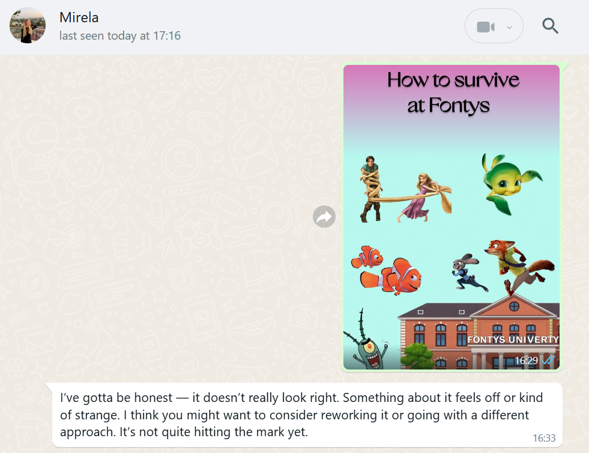
Once I created the first draft of the cover, I shared it with a close friend to get her feedback. At the same time, I explained my ideas for the story pages – how I imagined the layout, use of characters, text placement, and the overall mood of the magazine. I wanted to ensure that the cover page would feel like a natural introduction to what comes next and match the style of the internal pages.
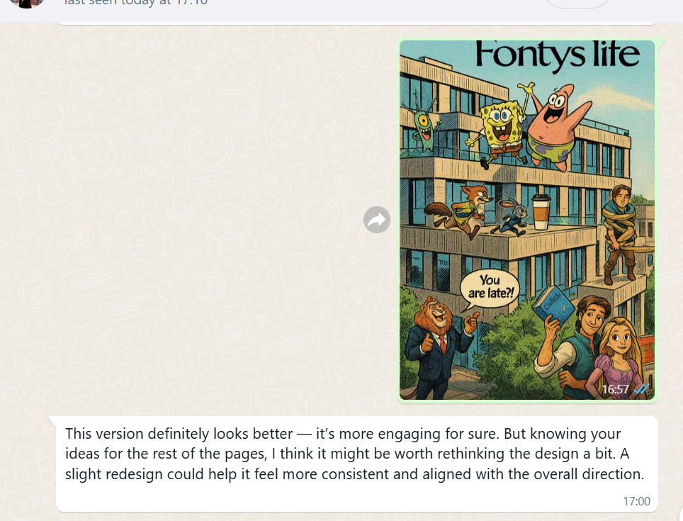
Based on her input, I went back and redesigned the cover, adjusting some colors, changing the layout, and trying a different visual hierarchy to make it more engaging. But even after the second version, something still didn’t feel quite right—it lacked harmony with the internal content and didn't look polished enough.
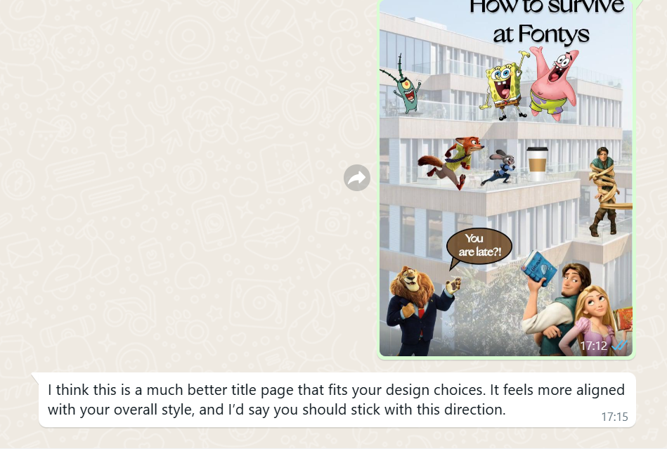
On my third attempt, I took a different approach, adjusting the layout, colors, and typography to better reflect the mood and theme of the magazine. This version felt more balanced and professional. My friend also gave her approval, confirming that the design matched the style of the story pages. I decided to go with this version as the final design.
This third version became my final decision for the cover page, and I used it as a reference point for the rest of the design work in the magazine.
How Did It Go?
The process involved a few rounds of experimentation and constructive feedback. Initially, I was unsure about how to make the page more engaging, but by listening to suggestions and testing ideas, I found a creative solution. The final version turned out to be visually appealing, interactive, and well-balanced. I was happy with the outcome, and so was my peer reviewer.
What I Learned
- The importance of gathering and applying feedback in the design process
- How to balance visual interest with a minimalistic aesthetic
- That small interactive elements can make a big difference in user experience
- How to take constructive criticism and use it to improve my work
Reflection
This redesign helped me grow both creatively and technically. I learned how crucial it is to be open to feedback and how small adjustments can significantly impact the overall look and feel of a design. By choosing to incorporate subtle interactive elements, I managed to turn a simple page into something more engaging and visually distinctive. The process reinforced my understanding of user-centered design and reminded me that effective design is both thoughtful and iterative.
Stories pages - Project X
Introduction
I began prototyping Project X, an electronic magazine in which I tell humorous and entertaining stories about life at Fontys University. My goal is to present these stories with a comedic twist to make them more engaging and relatable to students.
What Did I Do?
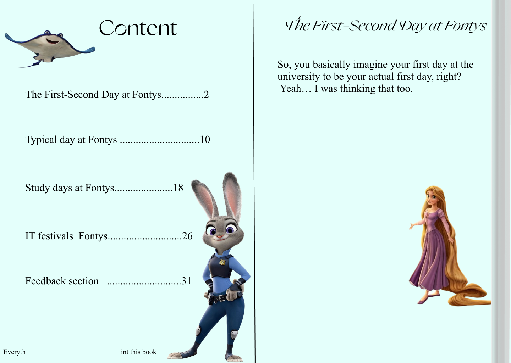
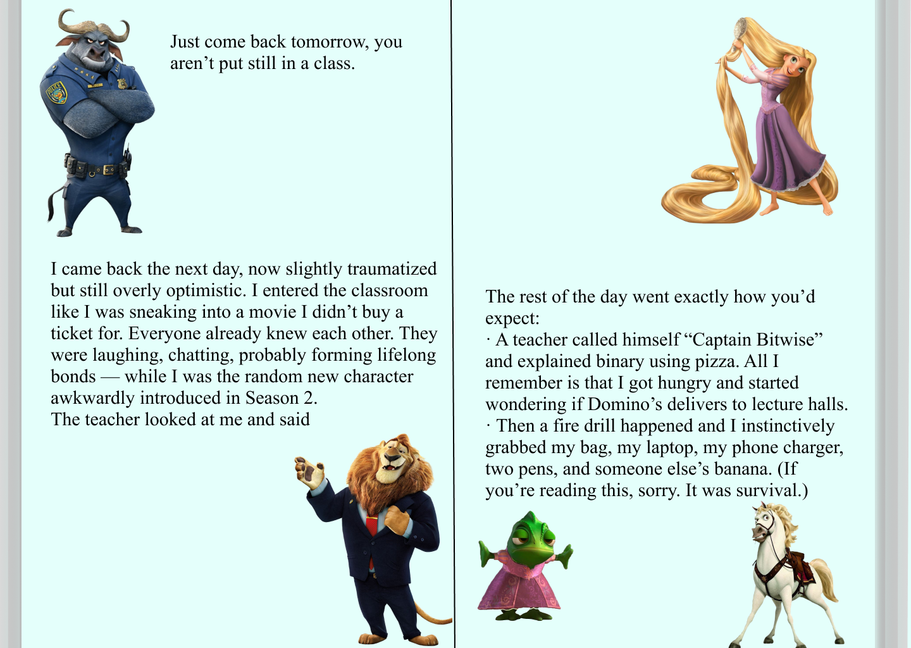
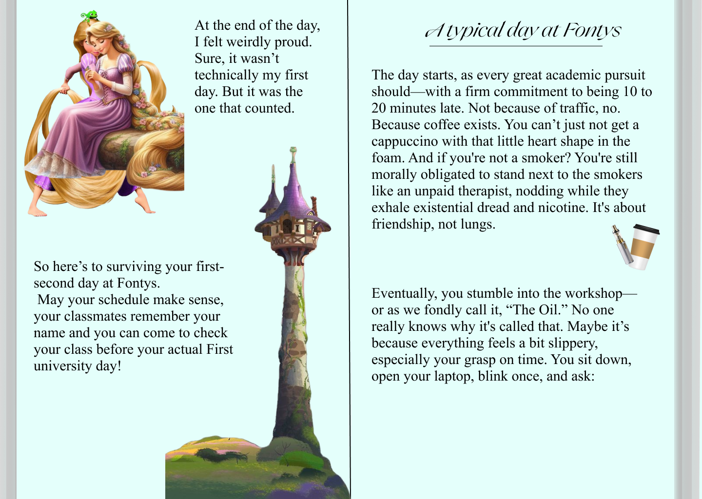
I designed the initial pages of the e-magazine and presented them to my teacher for feedback. He pointed out that the characters I created seemed to float randomly across the pages and lacked a clear structure. He suggested using a comic-style layout to better integrate the heroes and the text. He also showed me some examples and gave helpful ideas on how to approach this design change.
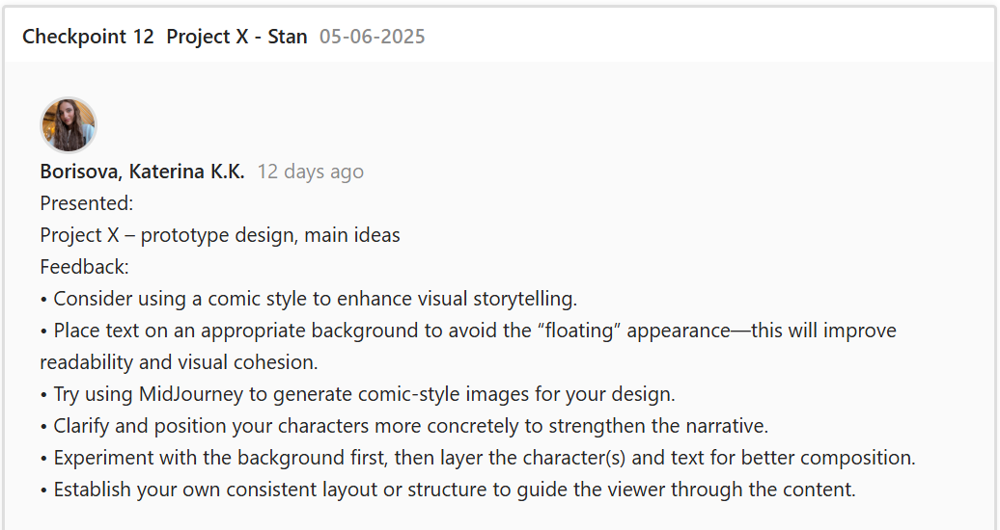
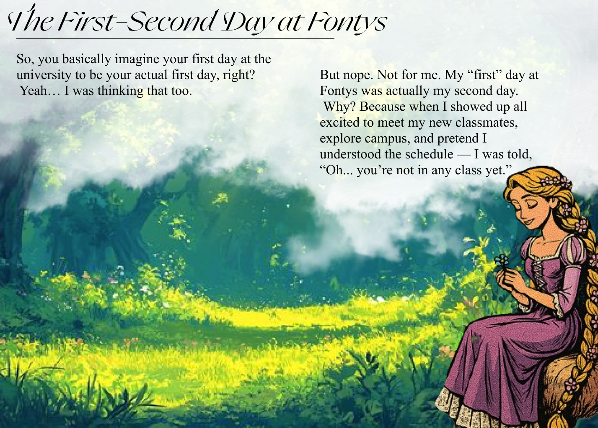
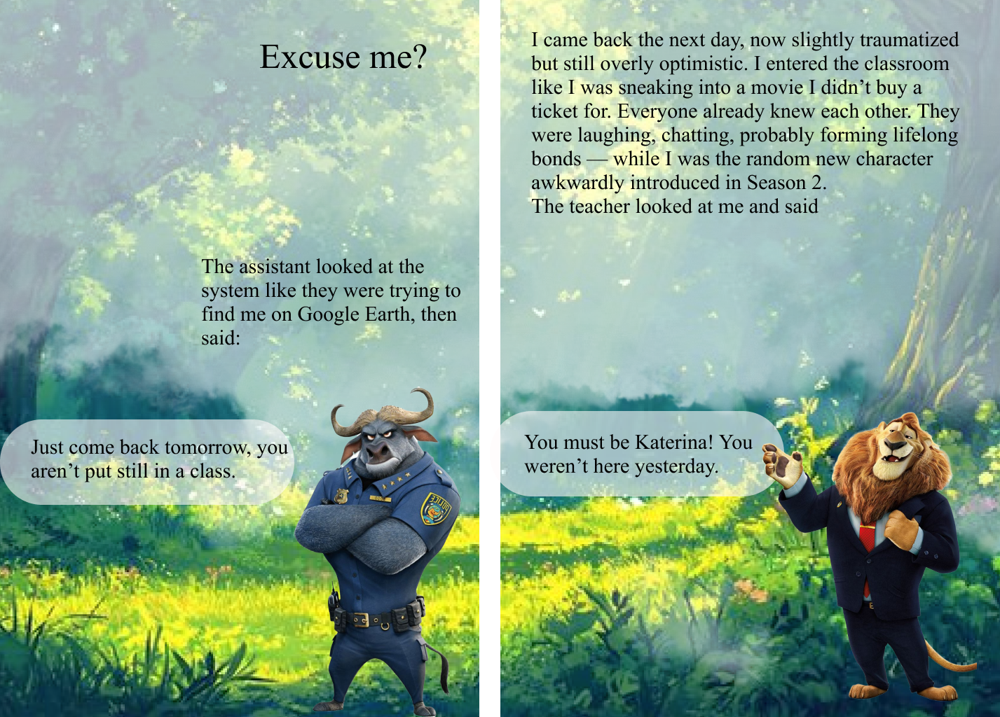
Taking his advice, I rearranged the characters and text on the pages to give them more structure. However, I struggled to properly implement the comic style. My original vision was quite different from the traditional comic layout, and I found it difficult to merge the two. Eventually, I decided to completely redesign the layout and asked a friend for her feedback to get a second perspective and to do a final decision.
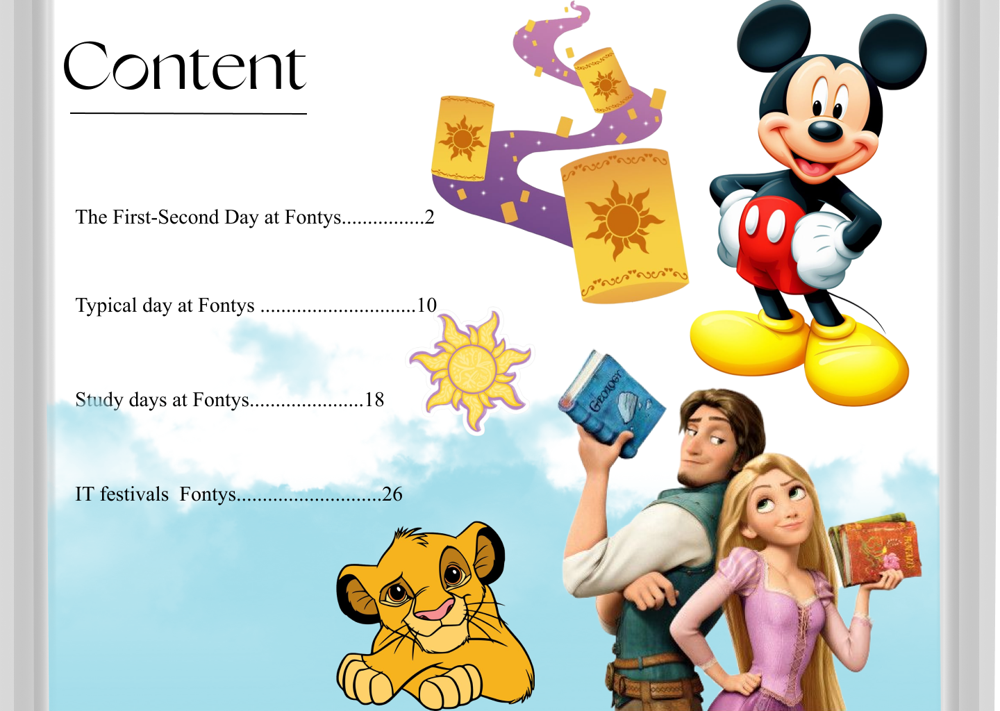
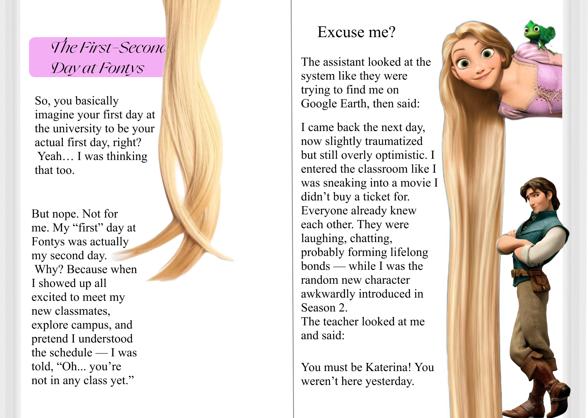
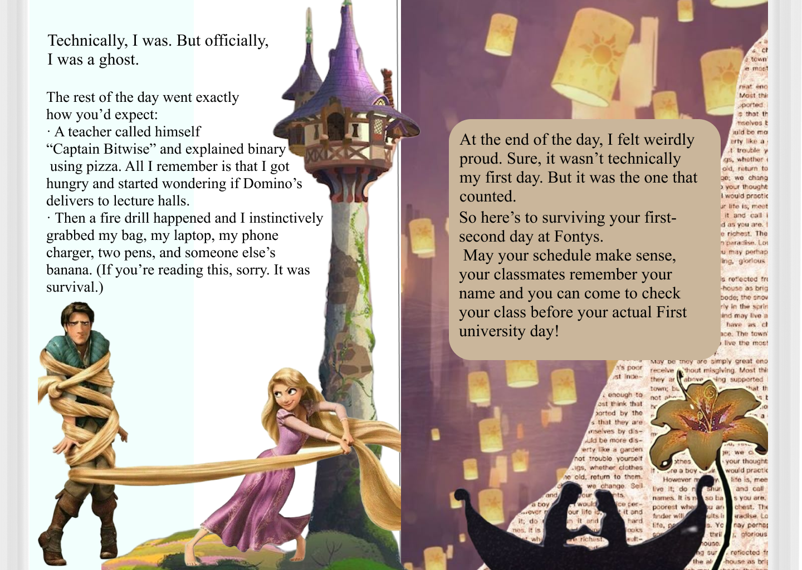
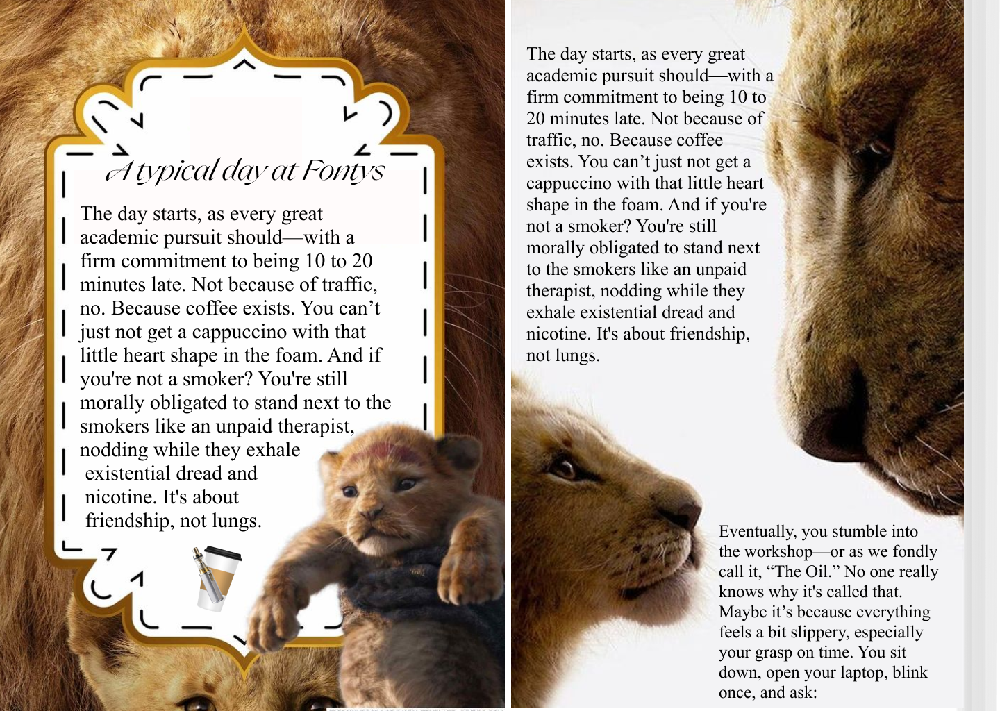
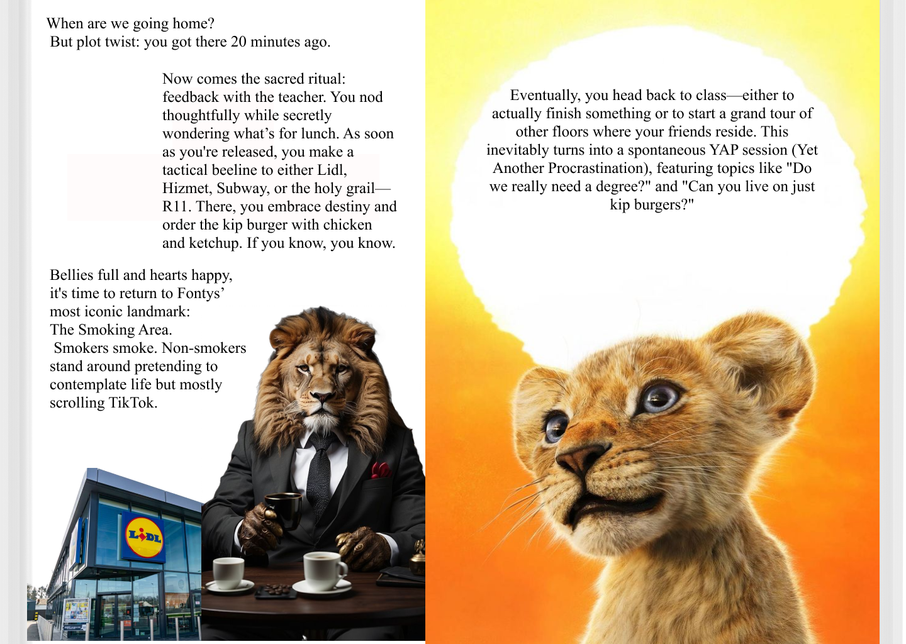
My friend told me that the new design looks much better and that everything matches correctly now. She felt that the elements were more cohesive and the style layout improved the storytelling. Her positive feedback gave me more confidence in the new direction of the project.
After spending time refining my ideas and exploring different possibilities, I now have a much clearer vision for my design. This clarity has significantly boosted my confidence, and I feel much more prepared and excited to move forward with the new concept, knowing it aligns well with my goals and creative direction.
How Did It Go?
The redesign process was challenging but productive. Although I faced difficulties translating my original concept into a comic format, the feedback I received helped me realize the importance of structure and visual storytelling. With my friend's input, I was able to identify weak areas in the design and brainstorm new ideas that aligned better with the comic style while keeping my humorous tone.
What I Learned
- I learned the importance of receiving and applying constructive feedback to improve a creative project.
- I realized that sometimes I need to let go of my original idea in order to explore better and more effective alternatives.
- I discovered that structure and visual consistency are crucial in making a story more engaging and easier to follow.
- I learned how helpful it is to involve others in the creative process to gain new perspectives and catch things I might miss.
Reflection
This experience taught me the importance of flexibility and iteration in design. While it was difficult to change my initial concept, the process helped me grow as a designer and storyteller. I now understand that a clear and structured visual format—like the comic style—can actually support and strengthen the humor I want to convey. Moving forward, I plan to study more about comic storytelling techniques and apply them more confidently in my next design phase.